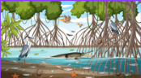
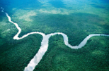
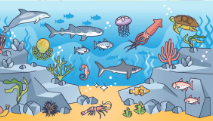

Los manglares son bosques mágicos que crecen donde el río se une con el mar.
Sus raíces forman un hogar para muchos animales y ayudan a proteger la costa de las olas
y las tormentas.
La selva húmeda tropical es un lugar cálido y lleno de lluvia todo el año.
Sus árboles gigantes forman un techo verde donde viven muchos animales y plantas de todos los colores. ¡Es un mundo lleno de vida y aventuras!
Los ecosistemas marinos son grandes hogares en el mar llenos de vida. 🌊🐠 Allí viven muchos animales y plantas que nos ayudan
a tener oxígeno y alimentos. ¡El mar es un mundo maravilloso bajo el agua!